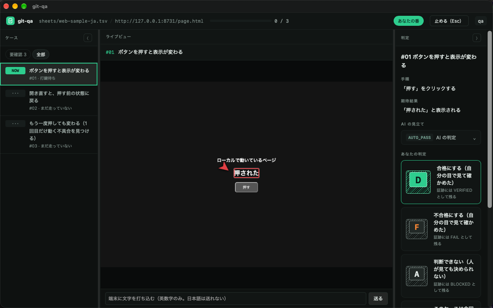
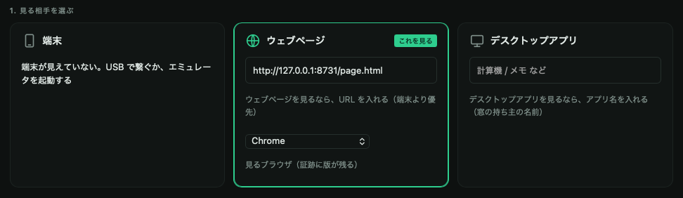

どれも、リポジトリに同梱している見本のシート（sheets/）と、ローカルで動く見本のページで再現しています。実在の案件のデータは使っていません。手元で同じ画面を開けます。

Android・ウェブ・デスクトップにまたがる回帰シートを AI が流し、人は変わった所と落ちた所だけを見る。
ケースごとに VERIFIED か AUTO_PASS か、ハンドル・時刻・その時の画面が残る。

MCP で画面を撮る・読む・押す。夜に無人で流し、朝は落ちた所だけ人が見る。